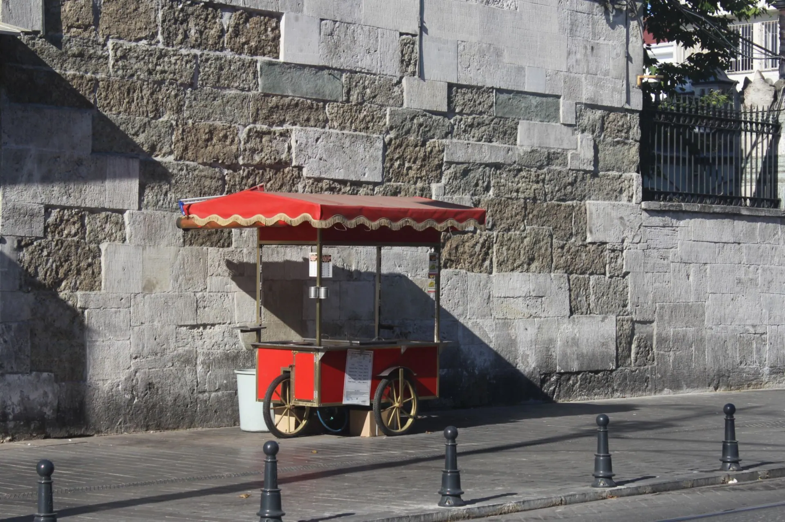

Grades 10 to 12
Business and entrepreneurship
Business model lesson: what a business model is, in 30 minutes, straight from this page
A free business model lesson for grades 10 to 12: compare two smoothie carts, learn the nine canvas building blocks, and fill in four. Project it and teach.
What your class will see
Press Teach it now and the board plays these in order. Click any slide to start there.
What it is
A business model is how a business creates value for a customer, delivers it, and makes money doing it. The Business Model Canvas, from Alexander Osterwalder and Yves Pigneur's book Business Model Generation (July 2010), puts a business model on one page. Strategyzer, which publishes the canvas, says its nine blocks cover who you serve, what you offer, how you deliver it, what it costs, and what it earns.
The nine block names used here are key partnerships, key activities, key resources, value proposition, customer relationships, customer segments, channels, cost structure and revenue streams. The U.S. Small Business Administration uses the same nine as the sections of its lean startup plan, which it describes as high-level, fast to write, and typically one page.
The lesson starts with a smoothie cart we made up, so no real company is needed. Students then pick a business of their own, such as a school store, dog walking, tutoring or a band, and fill in four blocks: customer, value, revenue and cost.
Our Business Canvas Project Workbook is a 38 page printable for the longer project that can follow. This lesson is a one period start.
How to run it
30 minutes, 7 steps. The time on the left is when each step starts.
-
0:00
Warm-up: two smoothie carts
4 minOn the boardImagine two smoothie carts outside the same school. Same smoothie. Same price. One is gone in a month. What could be different?
You do- Read the board aloud. Say that both carts are made up for this lesson.
- Students list two possible reasons alone for one minute.
- Take four reasons from the room and write them on the board. Do not judge them yet.
Say: There are no wrong answers yet. Keep your list. We will come back to it.
-
4:00
The idea in four facts
4 minOn the board- The Business Model Canvas describes how a business creates, delivers, and captures value on one page.
- It comes from the book Business Model Generation, by Alexander Osterwalder and Yves Pigneur, published in July 2010.
- The canvas has nine blocks: key partnerships, key activities, key resources, value proposition, customer relationships, customer segments, channels, cost structure and revenue streams.
- The U.S. Small Business Administration says a lean startup plan has key elements only and is typically one page.
You do- Read the four facts aloud, one slide at a time.
- After the first fact, ask which words mean the same as making money.
- Write the three questions every business model answers: who is the customer, what problem do we solve, and how does money come in and go out.
Say: A business model is the whole picture on one page, not just the product.
-
8:00
The nine building blocks
5 minOn the boardCustomer segments: the groups of customers the business tries to serve. Value proposition: what the business offers to meet their needs. Channels: how it reaches customers and delivers the offer. Customer relationships: the kind of relationship it keeps with them. Revenue streams: the ways it earns money from customers. Key resources: what it needs to have to create that value. Key activities: the most important things it has to do. Key partnerships: the outside partners that help it run. Cost structure: the main costs of running the business.
You do- Show the blocks one at a time and read each aloud.
- After each block, ask what the made-up smoothie cart would put there, and take one answer.
- Point out that the nine names match the sections of the SBA lean startup plan.
Say: The cart is made up. Any answer that fits the block is fine.
-
13:00
Money in, money out
5 minOn the boardSort the smoothie cart's items into REVENUE and COST. Then answer: which block answers "who pays us?"
You do- Students sort the eight items on the slide. They can drag them, or press Next and one item sorts itself each time.
- Run the quick check. Take a show of hands for each choice, then reveal the answer.
- Say that revenue is money coming in and cost is money going out.
Say: Customer segments tell us who pays. Revenue streams tell us how the money comes in.
-
18:00
Your turn: four blocks
7 minOn the boardPick a business: school store, dog walking, tutoring, or a band. Fill in four blocks. CUSTOMER: who pays? VALUE: what problem do we solve? REVENUE: how does money come in? COST: what do we pay for?
You do- Students pick one business alone and write one line for each of the four blocks.
- Start the seven minute clock. Walk the room.
- Look for a customer that is a specific group, a value that solves a real problem, a revenue line with something to sell, and a cost the student can name.
Say: Be specific. A group of customers you could name beats everybody.
-
25:00
Discuss
2 minOn the boardSpin the wheel. Talk about the question that comes up.
You do- Spin the wheel and give pairs a minute to talk about the question.
- Take one answer, then spin again if there is time.
-
27:00
Exit ticket
3 minOn the boardWe help ___ by ___ and earn money from ___.
You do- Students finish the sentence for their business on a scrap of paper and hand it to you at the door.
Discussion questions
Open an answer when you want it.
In the two cart story, what could explain why one cart lasted and the other did not?
Any block could differ: who the customers are, what the cart offers them, how it reaches them, what it earns and what it costs. The story does not say which, so a strong answer names one block and gives a reason.
Why does this lesson ask who the customer is first?
The customer segments block names who the business tries to serve. The value proposition, channels and revenue streams all describe something for those customers, so the other blocks are hard to fill in without it.
What is the difference between revenue and cost?
Revenue is money coming in from customers. Cost is money going out to run the business. In the cart story, a smoothie sale is revenue and a bag of fruit is a cost.
How is a business model different from a business plan?
The SBA says a good business plan walks you through each stage of starting and managing your business, and that a traditional plan is very detailed. The canvas describes the business model on one page. A plan works through more of the detail.
Exit ticket
Finish the sentence for your business: We help ___ by ___ and earn money from ___.
A strong answer names a specific group of customers, the problem the business solves, and a real way money comes in. Example (made up): We help classmates who forget pencils by selling pencil packs at the school store, and earn money from each pack sold.
Make it fit your class
Younger students
For grades 8 and 9, use three blocks instead of nine: customer segments, value proposition, and revenue and cost together. Keep the smoothie cart as the only example and skip the written task.
Older students
For a longer class, have pairs fill in all nine blocks for the same business, then trade with another pair and mark one block that is unclear or missing.
Want it printed? These files from our TPT store go with this lesson: AP Business with Personal Finance Business Canvas Project Workbook, AP Business with Personal Finance Full Year Curriculum Bundle All Units.
Where the facts come from
- Wiley, Business Model Generation: A Handbook for Visionaries, Game Changers, and Challengers. Used for the authors, Alexander Osterwalder and Yves Pigneur, and the July 2010 publication date.
- Strategyzer, The Business Model Canvas. Used for the canvas describing how a business creates, delivers, and captures value on one page, coming from the book Business Model Generation, and its nine blocks covering who you serve, what you offer, how you deliver it, what it costs, and what it earns.
- U.S. Small Business Administration, Write your business plan. Used for the nine section names of the lean startup plan, a lean startup plan being high-level, fast to write, key elements only and typically one page, a traditional plan being very detailed, and a good business plan guiding you through each stage of starting and managing your business.
- Wikipedia, Business Model Canvas (CC BY-SA 4.0). Used for the plain-language meaning of each block, which this lesson restates in its own words, and the canvas being used for developing new business models and documenting existing ones.
- TPT listing, AP Business with Personal Finance Business Canvas Project Workbook. Used for what the workbook is: a 38 page printable for the Business Canvas Project with a full canvas template, a PESTEL grid and interview logs.
Image credits
- Vintage Street Food Cart by Stone Wall by betül, Pexels License. Source.
- Food Carts on the Street Side by Roman Verton, Pexels License. Source.
- Hands Holding US Dollar Bills by Kaboompics (kaboompics.com), Pexels License. Source.
- Street Food Vendor Serving Customers Outdoors by Astrid Sosa, Pexels License. Source.
- Slices of Strawberries and Milk in a Pitcher by Cup of Couple, Pexels License. Source.
- Person Pointing at a Sticky Note by Kaboompics (kaboompics.com), Pexels License. Source.
- Hands Holding Paper Bills by Swastik Arora, Pexels License. Source.
- Close-up of a Crate of Lemonade by RDNE Stock project, Pexels License. Source.
Updated November 6, 2026